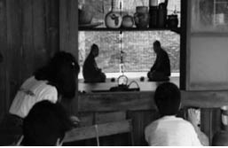

BAŞLARKEN
Şöyle bir sahne gözünüzün önüne getirmenizi istiyorum. İç Anadolu’da bir jandarma karakolu. Köyde ciddi bir hırsızlık olmuş. (Jandarma iseniz her türlü hırsızlık ciddidir!). İlçe jandarma komutanı ve karakol komutanı olayı çözüp failleri yakalamaya çalışıyor. Karakoldaki çalışma odalarından biri. Elde şüpheli bir adam var. Şüpheli 45-50 yaşlarında bir köylü. Elde delil olarak hiçbir şey yok, toplanan üç beş parça delilin analiz sonuçları da Kriminal’den en iyi ihtimalle 15 günden önce gelmeyecek. İlçe jandarma komutanı şüpheliyi bizzat sorguluyor. Olayın başlangıç safhasında, yeterince hazırlanmadan ve ifade alma planı yapılmadan girişilen sorgulama doğal olarak bir felaket şeklinde devam ediyor. Adam yeterince gözlenmemiş, bu nedenle heyecanlı mı, yoksa normal hali bu mu, o dahi anlaşılamamış. Olayın o esnada çözülmesi tamamen jandarma komutanının önsezileri ve yalan tespit yeteneklerine bağlı. Bununla ilgili hiçbir okul eğitimi yok. Sadece zamanında bir iki tane “Beden Dili” kitabı okumuşluğu var. İçindekilerden parça parça hatırladığı hususlar olsa da, yıllar önce katıldığı bir saatlik “Beden Dili” seminerinden aklında kalanlardan başkaca bir bilgisi mevcut değil. Bunlara dayanarak yalan tespit etmek zorunda. Kafasındakileri toparlamaya çalışıyor. Bu esnada personel de izlediği için heyecan yüksek (en azından şüphelinin heyecanından daha yüksek). “Gözlerimin içine bak da konuş!”1 diye sertçe çıkışıyor, adam tereddütsüz kafasını kaldırıp gözlerinin içerisine bakarak konuşuyor. “Biz yalan söyleyeni anlarız, tamam mı? Bunun eğitimini aldık!” diye adamı heyecanlandırmaya çalışıyor. Adamda tık yok! Soru soruyor ve cevabı alırken adamın gözlerinin baktığı yönü düşünüyor. İçinden, “Ulan acaba sağ aşağı bakarsa mı yalan söylüyordu, yoksa sol yukarı mı?”2 soruları geçiyor. Kafa iyice karışırken kazanan aslında şüphelinin kendisi oluyor.
Yukarıda anlattığım olay girişe renk olsun ve ilgi çeksin diye uydurulmuş bir hikâye değildir. Olay aynen gerçektir ve benim bizzat yaşadığım, gerçek bir anıdır. Orada kendimi son derece başarısız ve beceriksiz hissettim. Hem kolluk amiri olarak yalan tespiti ve beden dili konusunda kendimi uzman görüyordum, sanırım herkes de öyle görüyordu, öte yandan bu konuda elle tutulur hiçbir şey bilmiyordum. Gerçekten de üzücü bir durumdu. Olay çözülemedi ve faili meçhul kaldı. Bu nedenle adamın o gün yalan söyleyip söylemediğini hâlâ bilmiyorum. Fakat şurası bir gerçek ki, o gün olan olay benim bu konuda hem mesleki hem de kişisel anlamda ne denli eksik olduğumu gösterdi.
Kısa bir süre sonra Anadolu Üniversitesi İletişim Bölümü’ne yüksek lisans öğrencisi olarak girdim ve orada benim “beden dili” diye bildiğim konunun aslında “sözsüz iletişim” olduğunu, beden dilinin sözsüz iletişim alanının sadece bir bölümünü oluşturduğunu öğrendim. Zaten ilgimi çeken bir konuydu. Bu nedenle bitirme tezimin başlığını da “Sözsüz İletişim İşaretlerinin Okunması” olarak belirledim. Sonra uzun bir yazım süreci başladı.
Olayın üzerine gittikçe ve okudukça aslında Türkçe literatürün bilimsel anlamda ne kadar zayıf kaldığını fark ettim. Bu alanda yazılmış kitaplar, ikiye ayrılabilir. Bir grup kitap, akademisyenler tarafından ve akademik bir dille yazılmışlardır. Bunların yurtdışında örnekleri oldukça fazladır. Son derece doğru referansları vardır, doğru bilgiyi son derece güncel yayınlara dayanarak aktarırlar. Ancak okunabilirlikleri oldukça azdır. Genel olarak akademik çevrelerde ilgi çeker, kaynak kitap olarak kullanılır, ama sıradan okuyucuya çekici gelmez. Üstelik genel hayat tecrübesi üniversitede geçtiği için, anlatım deneylerle ve araştırmalarla sınırlıdır; gerçek dünyaya ve günlük hayata uyarlamaları sınırlıdır. Ülkemizde bu alanda akademik kitap ve yayınların sayısı oldukça az. Ben bu alanda tezimi verirken, bu nedenle sürekli yabancı makalelerden yararlanmak zorunda kaldım ve yurtdışından kitaplar getirterek güncel ya da referans bilgiye ulaştım.
Diğer bir grup kitap ise, alanda pratiğe sahip ya da öyle oldukları kabul edilen kişiler tarafından yazılmış, anlaşılır bir dile ve güncel örneklere sahip olanlar. Bu kitapların yazarları, genellikle akademik altyapıları olmamakla birlikte, meslekleri gereği sözsüz iletişimden yararlanan kişiler. Avukatlar, emekli polisler, eğitimciler bunlar arasında sayılabilir. “Beden Dili” başlığıyla popülerleşen bu kitaplar, genellikle birbirine benzer birtakım kitapları referans alarak, çoğu zaman aynı bilgileri vermekle birlikte, hayattan örnekleri güzel bir anlatımla aktararak kitabı zenginleştiriyorlar ve belli bir okur kitlesine ulaşıyorlar. Ülkemizde de örneklerine sıkça rastlayabiliyoruz. Ancak bu kitaplar da, pratik örneklere sahip olmakla birlikte, sağlam referanslar sağlamıyorlar. Genellikle güncel araştırmaları takip etmediklerinden, verdikleri bilgilerin geçerlilikleri tartışılabiliyor.
Peki, ben bu kadar örneği olan konuda neden bir kitap yazmak ihtiyacı duydum? Öncelikle meslek itibariyle, yıllarca jandarma subaylığı yaparak, bir kolluk personeli olmanın getirdiği sorumlulukla, bu alanın pratiğiyle uğraştım. Binlerce insanla karşılaştım. Kolluk şüpheyle hareket eder. Bu nedenle, bir olaydan ya da suçtan dolayı karşıma çıkan kişilerden şüphelenmek ve bu şüphelerimde haklı olup olmadığımı sorgulamak zorunda kaldım. Yüzlerce sorgulamaya katıldım ve ifade aldım. Bunların arasında basit aile kavgaları da oldu, cinayet şüphesiyle gelen insanlar da. Örneklerini ilerleyen sayfalarda bulabileceksiniz. Bu sebeple ben, ister istemez alanın pratiğinde uzmanlaştım, tıpkı diğer meslektaşlarım gibi. Daha sonra iletişim alanında yüksek lisans eğitimi alırken bu alanın akademisyenliğine yöneldim ve pratikte uyguladığım ya da gözlemlediğim olguların, bilimsel temellerini öğrendim. O zaman her şey daha kolay geldi. Baktım ki, benim herhangi bir hareketi ezberlememe gerek yok, eğer ben o hareketin davranışsal temellerini biliyorsam, zaten bunun anlamını da çıkarabilirim. Halen aynı alanda doktora eğitimine devam ediyorum, çünkü benim açımdan öğrenmek ancak mezarda bitebilecek bir süreç.
İşte bunların sonucunda, bu kitabı yazmaya karar verdim. Bir yandan, meslekte öğrendiğim sözsüz iletişim davranış ve sinyallerini aktararak, örneklerle açıklamak ve anlaşılır bir dille, ortalama eğitim seviyesindeki herhangi meraklı bir okura ulaşmak; diğer yandan bu davranışların kökenine inerek, verdiğim her bir bilginin referansını da yazarak, alanın akademisyenlerine ve ileride benim gibi bu konuda araştırma yazacak kişilere kaynak olmak gibi bir amaçla yola çıktım. Bu anlamda ne kadar başarılı olduğuma, elbette yine akademisyenler ve değerli okurlar karar verecektir.
Mesleki tecrübe, araştırma ve yazım sürecinde anladım ki her insan ayrı bir dünya; kimseye doğrudan uyacak ve herkese elbise gibi giydirilebilecek tam anlamıyla ortak bir sözsüz dil yok. Benzerlikler olabilir ancak aynı hareketi yapan herkes aynı şeyi düşünmüyor. Var olan kitaplar Japonlarla Amerikalıların arasındaki sözsüz davranış farklarını anlatıyor, çünkü kişisel alan bilgisinin kurucusu kabul edilen Edward T. Hall, 1969’da bu konuyu yazmış. Sanki her gün hepimiz Japon görüyormuşuz gibi. Neden? Çünkü tüm araştırmalar Amerika’da yapılmış. Ülkemiz hakkında öyle az çalışma var ki, neredeyse yok diyebiliriz. Böyle olunca başkalarının yazdıklarını kendimize uyarlamaya çalışıyoruz. Her bileğini gördüğümüz bayanın flört sinyali verdiğini düşünüp hayal kırıklığına uğruyoruz.
Ben genel olarak bu süreçte, sözsüz iletişime dair çok şey öğrendiğime inanıyorum. Yüzlerce makale okudum. Bunlar arasında Paul Ekman’ın 1960’larda yazdığı ve hâlâ güncelliğini koruyan makaleler de vardı, 2012 yılında yayımlanmış makaleler de. Bilim sürekli kendini yenileyen bir süreçtir. Sistem böyle kurulmuş. İnsanlar akademisyen olarak ilerleyebilmek için üretmek zorunda. Bu nedenle birçok yeni çalışma var. Sonra ben yazmaya başladım. Öğrendikçe paylaşmak istedim. Makaleler yazdım. Alana katkı sağlamaya çalıştım. Sonuçta bir şeyi fark ettim. Sözsüz iletişim ezbere birtakım öğretilerle anlatılabilecek bir konu değil. Sözel iletişim kurmak için yıllarca dil eğitimi alıyoruz. Ama sözsüz iletişimin bir eğitimi yok. Evrim ve genetik yoluyla getirdiklerinizi, aile ve çevrenizde öğrendiklerinize harmanlıyorsunuz; sonuçta size özel bir dil ortaya çıkıyor. Ortak paydalarla birlikte, tamamen kişiye özel.
Bu kitabı yazarken, Amerika’da örnekleri olan, ancak Türkiye’de pek uygulanmayan bir şey yapmak istedim. Orada yayımlanan akademik karakterdeki “Sözsüz İletişim” kitaplarının son bölümü uygulamaya ayrılıyor ve alanın uzmanları ile uygulayıcılarından davetli makaleler ve yazılar ekleniyor. Sonuçta okur, aynı kitabın içerisinde, farklı yazarların da bakış açısı ve bilgisinden yararlanabiliyor. Bu amaçla yurtiçinde ve yurtdışında, konunun uzmanları ya da uygulayıcılarına ulaşmaya çalıştım. Çalışmalarımın başından beri bana desteğini hiç esirgemeyen değerli Hocam Profesör Judith A. Hall, kitabın önsözünü yazdı ve burada kadınlarla erkekler arasındaki sözsüz iletişim becerileri arasındaki farkları özetledi. Beni hiç tanımadığı halde, çağrıma derhal cevap veren emekli FBI özel dedektifi ve beden dili uzmanı Joe Navarro, hem “Beden Dili Psikolojisi” adında, bu işin temellerine inen bir makale yazdı, hem de kendisiyle birlikte arkadaşlarını da davet etti. Yine emekli FBI özel dedektifi ve üniversitede saygın bir öğretim üyesi olan Dr. John R. Schafer, sözsüz iletişim metotlarıyla yalan tespitinin tamamlayıcısı özelliğinde bir makale yazdı ve sözlü/yazılı ifadelerden yalan tespit yöntemini anlattı. Emekli FBI özel dedektifi ve yazar Mike Roche ise, kişinin referans davranışlarını yakalamak için son derece önemli olan, ifadeler ve görüşmeler öncesi yakın ilişki kurma konusu ile ilgili bir yazı kaleme aldı. Ünlü yazar, beden dili uzmanı ve iş dünyasının önemli danışmanlarından Dr. Carol Kinsey Goman, liderlerin beden dili yetenekleri üzerine bir makale kaleme aldı. Romanyalı öğretim üyesi ve beden dili eğitmeni Dr. Mihaela Stroe, iş görüşmelerinde beden dili kullanımı ve yalan tespiti üzerine oldukça faydalı bir bölüm yazdı. Birçok arkadaşım daha katkıda bulunmak istedi ancak zaman darlığından ve kendi çalışmalarından dolayı yazma fırsatı bulamadılar. Ben katkıda bulunan ya da bulunamayan tüm uzmanlara ve profesyonellere teşekkürü bir borç bilirim. Umarım sonraki baskılarda onların çalışmalarını da ekleme fırsatı bulurum ve böylece eser daha da zenginleşir.
Kitapta yalan tespiti konusuna ben ve konuk yazarlar tarafından ayrı bir önem verilmişti. Çünkü bahsedilen konu çok önemli ve sözsüz iletişim davranışının pratikte kullanılabileceği en önemli alanlardan biri. Burada iyi yalancılardan da bahsettim, çünkü yalancıları tanımazsak yalanı da tanıyamayız. Bir gün bir ihbar üzerine bir eve gittik. Buraya sığınmış yirmili yaşlarında genç bir çocuk vardı. Falakaya yatırılmış, fena dövülmüş, bir fırsatını bularak kaçmış ve kenar mahalledeki bir eve saklanmıştı. Genci aldık ve saatlerce görüştük. Bizi o gece, şehrin içerisinde saatlerce gezdirdi ve inanılmaz hikâyeler anlattı. O kadar inandırıcıydı ki, size anlatamam. Belki bugün olsa daha şüpheyle bakabilirdim ama o zaman için anlattıklarına inandığımı itiraf etmeliyim. Öyle enteresan olaylar anlattı ki, bize sıfırdan bir senaryo kurdu. Bunun, o gece olanlarla aslında hiçbir ilgisi yoktu. Hiçbir heyecan belirtisi göstermedi. Olağan Şüpheliler3 filmindeki Roger “Verbal” Kint (Kevin Spacey) gibiydi. Ben, “Allah Allah, bu şehirde ne ilginç hadiseler oluyor, Hollywood filmi gibi...” diye düşünürken, tecrübeli bir istihbaratçı arkadaşımızı inandıramadı ve en sonunda doğruyu itiraf etmek zorunda kaldı. Gerçek ortaya çıktığında, anlattıklarıyla hiçbir ilgisinin olmadığı anlaşıldı. Bağlı bulunduğu kulübün malzemesini izinsiz almasına kızan arkadaşları, ona bir ders vermek için dövmüşler, o esnada ellerinden kaçırmışlardı. Arkadaşlarının tepkisinden çekinen genç, bunu bize anlatmak yerine gece boyunca bambaşka bir hikâye anlatmayı tercih etmişti. Yalan yakalama işi, yalancıları fark etmekle ve şüpheyle başlar.
Ünlü Japon yönetmen Akira Kurosawa’nın Ağustos’ta Rapsodi4 adlı filminin başrolünde, kocasını Nagazaki’ye atılan atom bombası sonucu kaybeden yaşlı bir büyükanne ile dört torununun ilişkileri anlatılır. Filmin bir sahnesinde, büyükanneyi, kendi yaşlarında bir kadın ziyaret eder. Hiç konuşmadan saatlerce birbirlerine dönük otururlar. Misafir kalkarken selamlaşırlar ve yine konuşmadan ayrılırlar. Büyükanneye göre son derece farklı bir kültürle yetişmiş olan torunlar için bu durum oldukça gariptir Akşam yemeğinde dayanamayıp sorarlar:
“Bugünkü o yaşlı kadın niye geldi?”
“Benimle konuşmaya geldi.”
“Ama hiç konuşmadınız ki. Sonra kadın hiçbir şey demeden seni selamlayarak gitti.”
“Bazı şeyleri anlatmak için konuşmaya gerek yoktur. Onun kocası da, aynı büyükbaba gibi, Nagazaki’de öldü. İşte bu yüzden buraya gelir, konuşmadan oturur ve konuşmadan gider. Konuşurken suskun olan insanlar da vardır.”
Yemek masası birden sessizleşir. Bu kültürün çok uzağında olan çocuklar, ciddi bir hayat dersi almışlardır. Aslında hepimiz bu hayat derslerini aldık, fakat kalabalık şehirler, koşuşturmaca, gürültülü yaşam, bizlere bu gerçekleri unutturdu. Konuşmadan anlaşabilen insanlar var. Bazen çiftleri gözlemlerim, fark ettirmeden. Adam ya da kadın, yanındakine bıkmadan bir şeyler anlatmaya çalışır. Diğerinin gözleri anlatanda, bedeni bambaşka bir yerdedir. Göğsünün yönünden anlarım, ayakkabılarının istikametinden, yalancı gülümsemesinden. Anlarım ki suskun olan gitmek üzeredir. Diğeri bunu anlamıştır ve aslında umutsuzca dil dökmektedir. Bazen de bir çift görürüm. Hiç konuşmazlar, ama anlarım ki görünmez bir bağ vardır aralarında. Başları aynı açıyla yatmıştır, gövdeleri birbirine dönüktür. Elleri dokunur belli belirsiz. Anlarım ki onlar, kimselere duyurmadan çok şey anlatmaktadırlar. Kitapta bunları anlamak için birçok ipucu bulacaksınız.

Ağustos’ta Rapsodi filminden bir sahne.
Ben yeni bir metot sunmaya karar verdim. Hadi gelin insan doğası üzerinde biraz çalışalım. İnsanın istemli yaptığı hareketleri bir yana bırakalım. El sıkarken neresinden tuttuğundan kime ne? Eğer gerekli ise, buna politikacılar baksın. Biz insanın, diğer canlılarla da paylaştığı ortak hareketler üzerine biraz çalışalım. Gerçek bilimsel çalışmalara birinci ağızdan kulak verelim ve kendi kültürümüze uyarlayalım. Ben burada kimseye bir şey öğretmekten bahsetmiyorum. Yazacaklarım tamamen insana dair. Bu nedenle kimselere bir şey öğretmek de benim haddim değil. Ben birlikte öğrenme sürecinden bahsediyorum. İnsana dair ne varsa birlikte öğrenelim. Tecrübeyi paylaşalım. Kendi yaşantımızdan örnekler varsa onu da paylaşalım. Böylece bu kitabın bir parçası sizin de olsun. Sizin hikâyeleriniz de yazılsın isminizle birlikte. Böylece daha da zengin ve bize dair bir kitabımız olsun. Çocuklarımıza, öğrencilerimize, personelimize okutalım. Sözsüz iletişim becerileri ya da kişiler arası duyarlılık kişinin sosyal yeterliliğini belirleyen önemli hususlardan biri. Öyle bir kitap yazalım ve çocuklarımıza okutalım ki toplumla ve çevreleriyle daha barışık insanlar olsunlar. İletişim kanalları sonuna kadar açık olsun. Daha coşkulu iletişim kursunlar, arkadaşlarını, eşlerini, çocuklarını, iş arkadaşlarını daha iyi anlayan insanlar olsunlar.
Evet, bu kitap benim değil hepimizin. Bu laf olsun diye yazılmış bir şey değil, bir gerçek. Bana yazın. Yaşamınızda insanları değerlendirmek için, anlamak için, empati kurmak için faydalandığınız ne varsa bana yazın. Kendi bulduğunuz yalan işaretlerini bana yazın. Çocuğunuzda işe yarayan, ama eşinizde yaramayan işaretleri yazın. Ben de sizin yazdıklarınızı, kitabın yeni baskılarında okurlarla paylaşayım. Böylece toplumun her kesimine hitap eden, tamamen yerli ve bize özgü bir kitabımız olsun.
Kitapta ilerlerken, göreceksiniz ki aslında hepimiz bir sözsüz iletişim uzmanıyız. Çocuğumuzun söylediği bir yalanı yakalarken; eşimizin işyerinde bir sorunu olduğunu, o daha söylemeden anlarken; sokakta karşılaştığımız tinercinin bize saldırıp saldırmayacağını ya da potansiyel bir tehlikesinin olup olmadığını fark ederken aslında hepimiz sözsüz işaretler okuyoruz. Yeni bir şey anlatmıyorum, sadece size farkında olmayı anlatıyorum. Farkında olmak, önce kendinizi, sonra başkalarını okumaktan geçmekte. Bu nedenle bu kitap, kendini ve başkalarını okuma ya da farkına varma kılavuzudur. Farkında olmak, gözlemlemekle başlar. Kitap da gözlemlemeyi anlatarak başlıyor. Gözlemleyen insan, kendisinin ve çevresinin farkına varan kişidir. Gözlemlemeyle birlikte, durumsal farkındalığı anlatmamın nedeni de budur. Kişinin durumsal farkındalığı ne kadar artarsa, sözsüz iletişimde, yani sözsüz işaret ve davranışların okunmasında o kadar başarılı olacak; aynı zamanda önemli bir yaşam becerisi geliştirecektir.
Sanırım artık başlama zamanı. Hadi, kendimizi ve başkalarını tanıma yolculuğuna başlayalım.
“Şimdi yeni bir şeyler söylemek lazım.”
1. Lieberman, D. J. (1998). Never be lied to again. New York: St. Martin’s Press.
2. Bakış yönüyle hatırlama ya da yalan söyleme arasındaki bağlantı NLP öğretisiyle ilgili bir konudur. Birçok kitapta geçmekle birlikte, Pease, A. ve Pease B. (2004), The definitive of body language, New York: BantamBook ve Goman, C. K. (2008), İşyerinde Beden Dili, İstanbul: Alfa Yayınları adlı kitaplar örnek olarak verilebilir.
3. Singer, B. (1995). Usual Suspects. Hollywood filmi. Başrolde oynayan Kevin Spacey, bir olay sonrasında alınan ifadesinde, polislere etrafındaki objelerden faydalanarak bir sürü yalan söyler, organizasyonun lideri olduğu fark edilmez ve sorgulama sonucunda o kadar inandırıcı bulunur ki, serbest bırakılır.
4. Kurosawa, A. (1991). Hachi-gatsu no kyôshikyoku (Ağustos’ta Rapsodi). Japon sinema filmi.